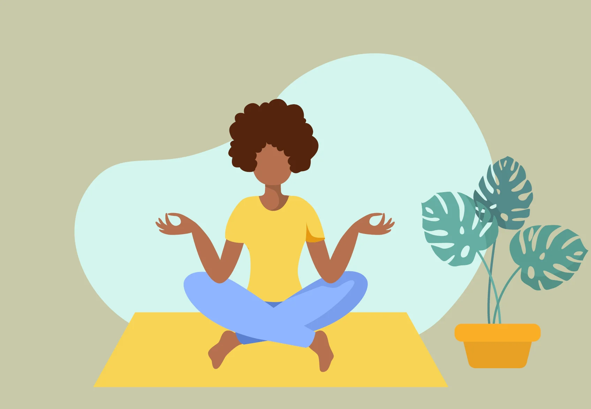

Stress and anxiety are common experiences that, if left unmanaged, can take a toll on your mental and physical health. In this blog post, we'll explore effective strategies for managing stress and achieving better well-being. Stress and anxiety can manifest in various ways and affect different aspects of your life. By understanding how to manage them, you can improve your overall quality of life.
The first step in managing stress and anxiety is recognizing the signs. Common symptoms include a rapid heartbeat, racing thoughts, and a feeling of overwhelm. By acknowledging these signs, you can take action early. Identifying stress and anxiety is crucial for addressing the root causes and implementing effective solutions.
Deep breathing exercises can be highly effective in calming the nervous system. Try inhaling for a count of four, holding for four, and exhaling for four. Repeat this several times to reduce anxiety. Breathing techniques can be practiced anywhere and are a valuable tool for managing stress in daily life.
Regular exercise is a natural stress reliever. Engaging in physical activities like yoga, walking, or jogging can release endorphins, which are known as "feel-good" hormones. Exercise not only helps reduce stress but also promotes physical health and overall well-being.
Mindfulness practices and meditation can help you stay present and reduce the impact of stressful thoughts. Incorporate mindfulness into your daily routine to promote relaxation. Meditation is a powerful technique for cultivating a peaceful mind and enhancing emotional resilience.
Don't hesitate to seek professional support if stress and anxiety persist. Therapists and counselors can offer valuable strategies to cope with stress and develop resilience. Reaching out for support is a proactive step toward improving your mental health and overall life satisfaction.